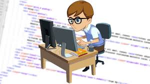
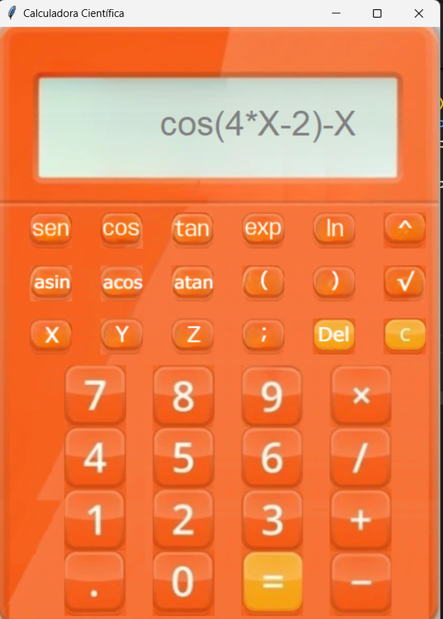
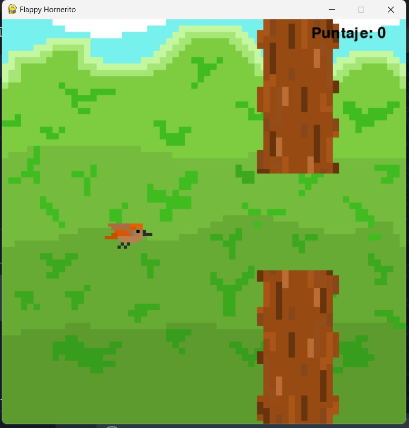

Sobre mí

¡Hola! Soy Ramón Horacio Sutara, estudiante de Ingeniería Informática en la Universidad Católica de Salta. Mi recorrido en el mundo de la tecnología comenzó en la Escuela Técnica N°2, donde descubrí la programación y su capacidad para resolver problemas reales de forma creativa. Desde entonces, supe que quería seguir por este camino.
Hoy en día, me especializo principalmente en Python y tengo un marcado interés por el desarrollo backend. Disfruto especialmente diseñar y pensar algoritmos: para mí, resolver un desafío lógico es como armar un rompecabezas que vale la pena completar.
Además de mi formación académica, trabajé durante un año como técnico electrónico, lo que me dio una visión práctica y complementaria del mundo tecnológico.
Fuera del código, me gusta pasar tiempo con amigos y soy fanático de los juegos de estrategia—esas pequeñas batallas mentales que también entrenan el pensamiento lógico.
Podría decir que mi filosofía de trabajo se basa en la mejora constante, la curiosidad y el compromiso con cada proyecto, por más pequeño que sea. Siempre hay algo nuevo que aprender y una forma más eficiente de hacer las cosas.
Calculadora Científica Avanzada

Este proyecto consiste en una calculadora científica desarrollada en el lenguaje de programación Python, diseñada para realizar desde operaciones aritméticas básicas hasta funciones matemáticas complejas.
Entre sus principales funcionalidades se incluyen el cálculo de funciones trigonométricas, exponenciales y logarítmicas, así como la evaluación de funciones definidas por el usuario en un valor específico.
Además, permite graficar funciones y calcular sus raíces, lo que la convierte en una herramienta versátil tanto para estudiantes como para profesionales del área científica y matemática.

Flappy Hornerito
Este proyecto consiste en una versión del clásico juego Flappy Bird, desarrollada completamente en el lenguaje de programación Python. El juego fue construido utilizando bibliotecas gráficas que permiten una experiencia fluida e interactiva. Todos los sprites y elementos visuales fueron diseñados por nosotros, dándole un estilo visual único y personalizado. El objetivo del juego se mantiene fiel al original: controlar el vuelo de un pájaro evitando obstáculos para alcanzar la mayor puntuación posible. Es un proyecto ideal para demostrar habilidades en programación de videojuegos, diseño gráfico y manejo de eventos en tiempo real.

Planes a futuro
A medida que avanzo en mi formación como ingeniero informático, tengo la mirada puesta en el mundo del manejo de datos. Me interesa especialmente el diseño y la gestión de bases de datos, aplicadas a contextos reales como comercios, empresas o servicios —por ejemplo, crear y optimizar un sistema para un supermercado o una red de negocios..
A futuro, uno de mis grandes objetivos es sumar mis conocimientos al negocio familiar, liderado por mi padre, quien se desempeña como técnico ofreciendo servicios a distintas empresas del país. Mi idea es aportar un valor agregado desde la ingeniería informática, fusionando experiencia con innovación y desarrollando un perfil emprendedor sólido.
También contemplo la posibilidad de formar parte de una empresa de gran escala, incluso multinacionales como Google o Amazon, donde pueda seguir creciendo y aprendiendo en entornos de alto impacto.
Más allá de lo técnico, me gustaría desarrollar habilidades de liderazgo, mejorar mi visión en diseño y adquirir una mirada más integral sobre los proyectos. Me interesa no solo cómo funciona algo, sino cómo se ve y cómo se siente usarlo.
En lo personal, me motiva la idea de trabajar de forma remota con equipos distribuidos, y también tener la posibilidad de viajar, especialmente a Europa. Creo que el intercambio de culturas y experiencias suma mucho, tanto a nivel profesional como personal.
A largo plazo, sueño con convertirme en profesor de programación o matemáticas. Enseñar es una forma de compartir lo aprendido y multiplicar el conocimiento, algo que me inspira profundamente. Y, como objetivo más personal, quiero poder construir una vida cómoda para mi familia, usando la tecnología como herramienta para lograrlo.